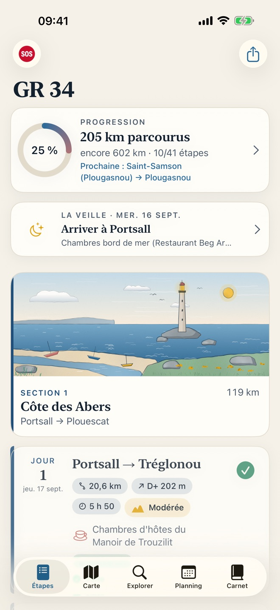
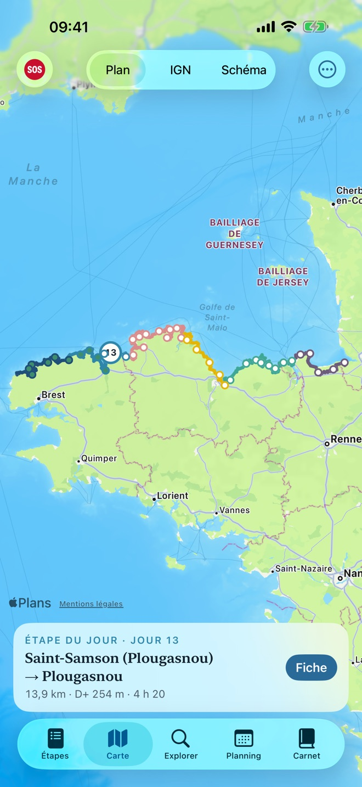
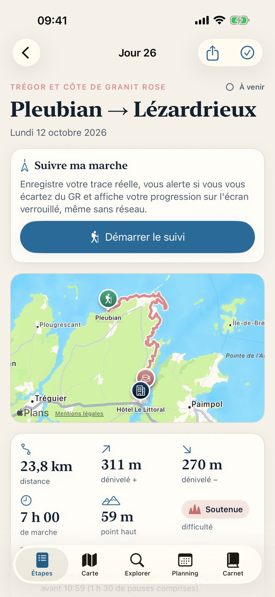
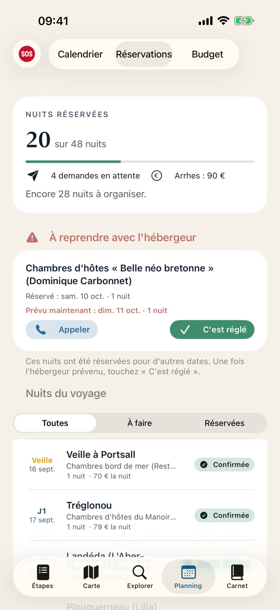
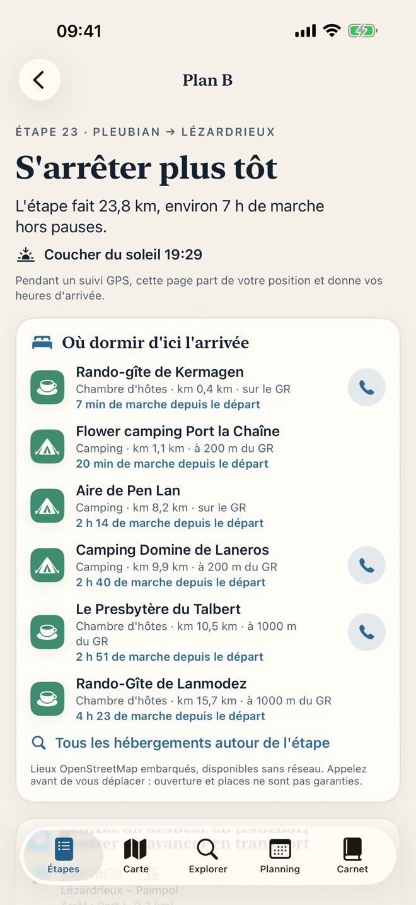
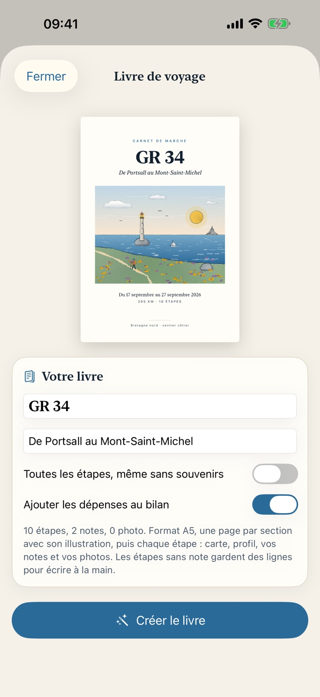

Sentier des douaniers
Sentier des douaniers806 kilomètres de côte bretonne, du nord du Finistère à la baie du Mont-Saint-Michel, découpés en 41 étapes de 12 à 25 km, à marcher dans un sens ou dans l'autre. L'app accompagne la randonnée de la préparation à l'arrivée, et fonctionne sans réseau sur le sentier.






Préparer
- 41 étapes documentées : distance, dénivelé, durée, difficulté, profil altimétrique IGN, points forts, passages délicats (marées, falaises, bacs), ravitaillement, points d'eau, transports.
- Un hébergement choisi à chaque arrivée, avec une alternative : adresse, téléphone, prix relevés et sourcés. Une information non confirmée est signalée, jamais inventée.
- Dans les deux sens : de Portsall au Mont-Saint-Michel, ou du Mont à Portsall. Étapes, durées, difficultés et hébergements suivent le sens choisi.
- Le calendrier : date de départ, jours de repos, dates de chaque étape recalculées.
- Les réservations : où en est chaque nuit, message de demande prêt à envoyer par e-mail ou SMS, prix convenu, arrhes. Si vous décalez le calendrier, l'app liste les hébergements à prévenir.
- Le budget estimé, puis les dépenses réelles.
Marcher
- Cartes IGN hors ligne le long du tracé, et une vue schématique toujours disponible.
- Suivi GPS : progression, heure d'arrivée, prochain point d'eau, alerte si vous quittez le sentier, sur l'écran verrouillé et dans la Dynamic Island.
- Plan B : fatigue, météo, blessure ? Les hébergements d'ici l'arrivée, les transports, le coucher du soleil, et l'étape coupée en deux jours en un geste.
- Explorer : crêperies, points de vue, gîtes, boulangeries, eau, autour de l'étape ou de vous, avec plus de 5 000 lieux disponibles sans réseau.
- Widget « Étape du jour » et app Apple Watch.
Se souvenir
- Le carnet : notes et photos à chaque étape, traces GPS réellement marchées.
- Le livre de voyage : un PDF au format A5 mis en page avec les cartes, les profils, vos notes et vos photos, à imprimer ou à faire relier.
- La sauvegarde dans le dossier iCloud Drive de votre choix, faite toute seule.
Sans compte, sans publicité
Rien à créer, rien à payer, aucune donnée collectée. Vos notes, photos, traces et réservations restent sur votre iPhone (et dans la sauvegarde que vous choisissez). Détails dans la politique de confidentialité.
Sources
Tracé et lieux : © contributeurs OpenStreetMap (ODbL). Altimétrie et Plan IGN : © IGN (Licence Ouverte Etalab 2.0). Trait de côte : Natural Earth. Recherche en ligne : Plans d'Apple et Wikipédia. Hébergements, transports et vigilance : recherche documentée, une source par information.
GR® est une marque déposée de la Fédération française de la randonnée pédestre. Cette application indépendante n'est ni éditée ni approuvée par la FFRandonnée ; pour le balisage et les topo-guides officiels, voir ffrandonnee.fr.